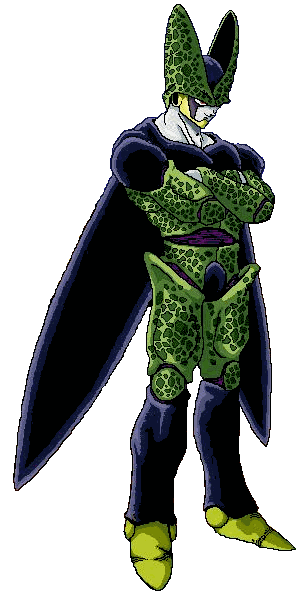

|
 Biodroids |
|
Description: Biodroids are biologically engineered androids. They are made of cells of a large variety of races. This makes it possible that they have the skills of many races combined. Biodroids are known for their unusual way of training. When a bioandroid kills someone who is close to his/her own pl, or higher they have the ability to absorb biomass from the victim. When a biodroid gathered enough biomass they transform to another stage. Unlike other races biodroids don't lose powerlevel when they die. However they do lose a part of their gathered biomass. When you die too often you can go back a stage, however you will lose the higher mod that the stage gave until you get enough biomass again. Energy Attacks: Special Beam Cannon Kamehameha Energy Ball Energy Sphere Skills: Primary Attack Absorb Grip Heal Fingerbeam Regenerate Powerups: Larvae Form Adult Form Semi-Perfect Form Perfect Form |